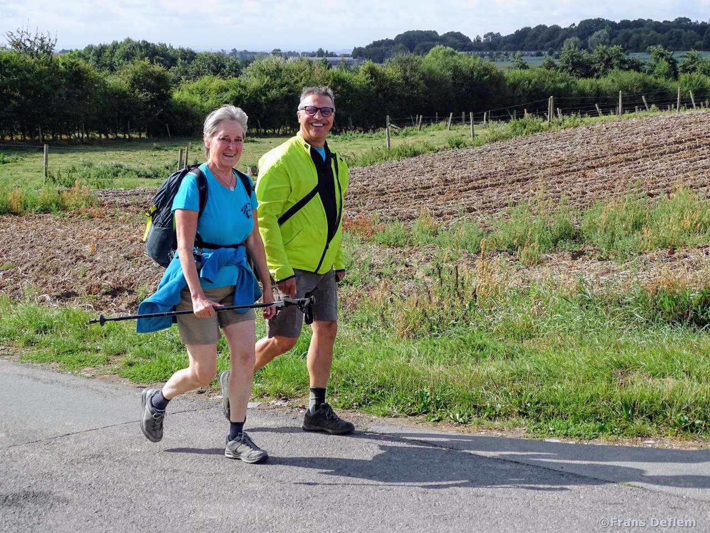
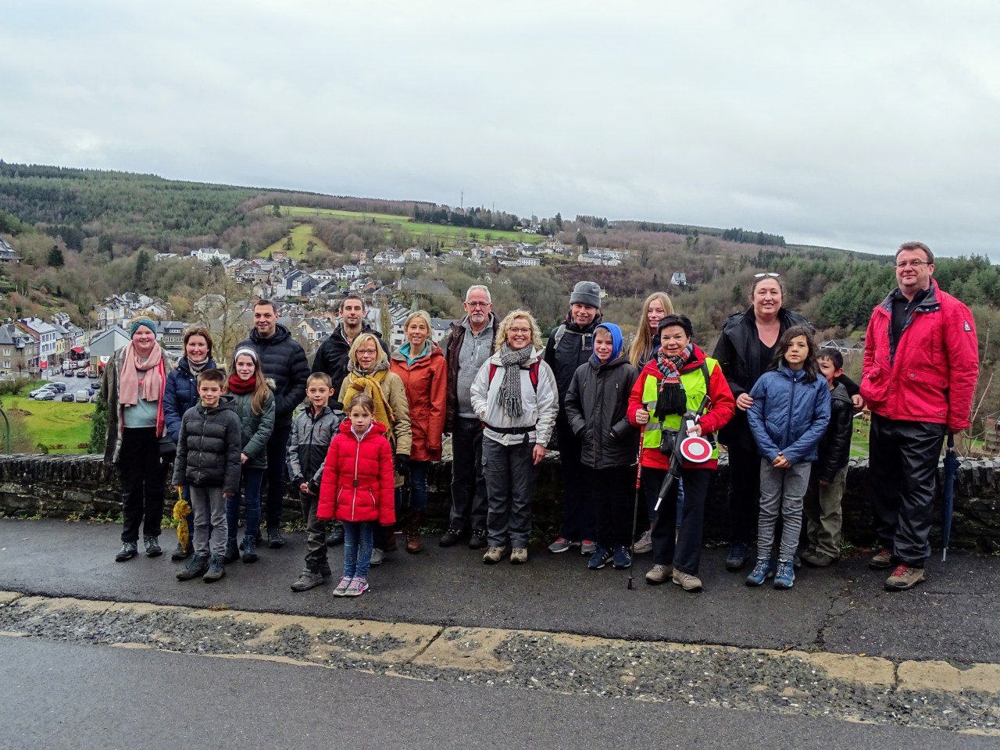

Ik stap waar het moet!
By Frank | Posted on februari 8, 2021In deze coronaperiode is er steeds één constante die terugkeert : wandelen! Wandelen is in, wandelen is hot. Maar stap je nu beter links of rechts in de rijrichting, mag je met 2 naast elkaar wandelen, waar wandel je als er geen voetpad is. Rond VEILIG WANDELEN bestaat soms heel wat verwarring. Tal van zaken die vragen om enige duidelijkheid. Ook de media schenkt de laatste tijd veel aandacht aan het wandelgebeuren.
Individuele wandelaars
Als wandelaar ben je verplicht om eerst en vooral op het voetpad te stappen. Een voetpad is een deel van de weg dat speciaal is voorbehouden aan voetgangers. Is er geen voetpad, dan moet je wandelen op de begaanbare berm (verhoogde of gelijkgronds). Pas als ook dat niet mogelijk is, mag je op een parkeerzone of fietspad wandelen. Let wel op: op een fietspad hebben de fietsers blijvend voorrang. Geef hen dus voldoende ruimte. Zijn er geen voetpaden, bermen of fietspaden, dan mag je op de rijbaan stappen.

De regel op de rijbaan zegt dat je zo links mogelijk (dus zo dicht mogelijk bij de rand) en achter elkaar moet lopen. Enkel als er zich een situatie voordoet, waarbij het erg goed te verantwoorden is om toch rechts achter elkaar op de rijbaan te stappen, dan mag dit. Dat kan bijvoorbeeld de veiligste optie zijn in een bocht, waar de zichtbaarheid erg beperkt is. Twijfel je toch, gebruik dan je gezond verstand en schat in wat voor jou de veiligste oplossing is.
Groepen met/zonder begeleider
Wat groepen betreft, wordt er in de wet een onderscheid gemaakt tussen groepen met en zonder begeleider. Groepen zonder begeleider, volgen de regels die gelden voor de individuele wandelaars m.a.w. deze groepen moeten links achter elkaar op de rijbaan stappen (als er geen veiligere optie zoals voetpad, berm of fietspad mogelijk is).
Groepen met begeleider vormen een uitzondering op de wet en mogen, ook als er een fietspad is, rechts op de rijbaan stappen. In dit geval is het wel belangrijk te weten wanneer er van een groep kan gesproken worden en wat men verstaat onder begeleider. Helaas maakt de wet geen duidelijke afbakening wat het minimum aantal deelnemers van een groep betreft. Maar meestal spreekt men al over een groep als de samenstelling meer dan vijf leden plus de begeleider telt.

Deze begeleider draagt de verantwoordelijkheid over de groep en wordt geacht de rechten en plichten te kennen. Bovendien heeft hij/zij het traject voorbereid en gedacht aan de veiligheid van de groep ( vb. door het dragen van een oversteekbordje C3 of verlichting bij slechte zichtbaarheid). Deze groepen met begeleiders zijn niet verplicht achter elkaar te stappen, maar wel rechts en zonder meer dan de helft van de rijbaan in te nemen. Maak daarvan enkel gebruik als de omvang van de groep dat verantwoordt. Op een drukkere weg blijft het aangewezen om steeds voor het voet-of fietspad te kiezen en als dat kan, alsnog links achter elkaar te gaan stappen. Ook hier geldt: Maak elke keuze weloverwogen en in functie van de veiligheid. Als je in groep wandelt, moet je duidelijk te herkennen zijn als een eenheid, met een herkenbaar begin en einde. Bij voorkeur draagt de eerste (wandelbegeleider) en de laatste wandelaar een fluohesje.